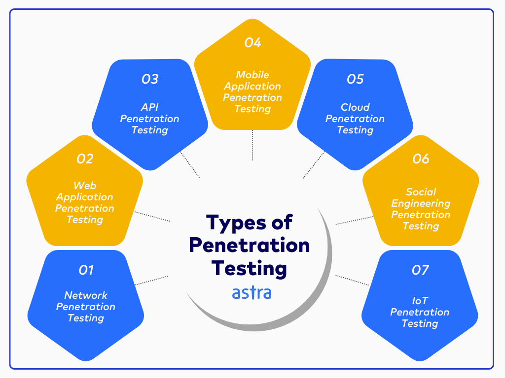
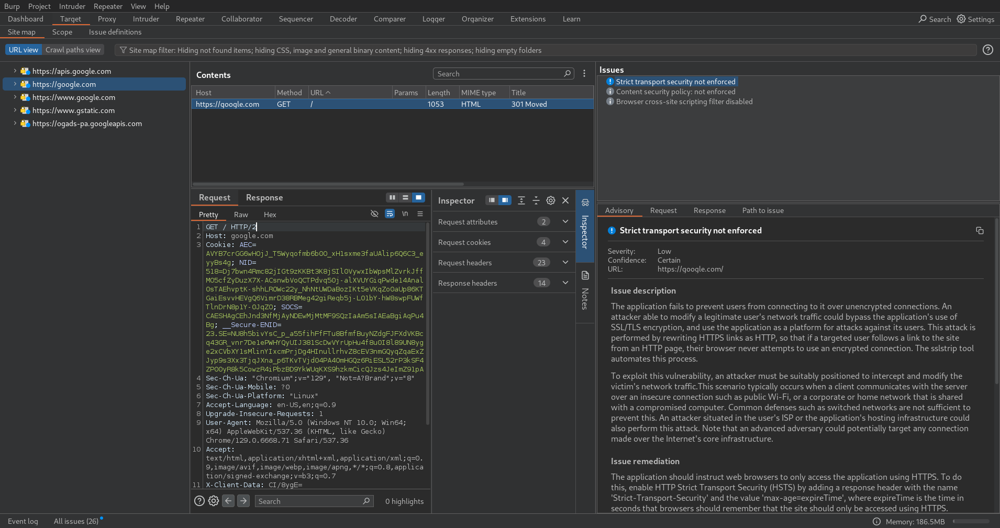
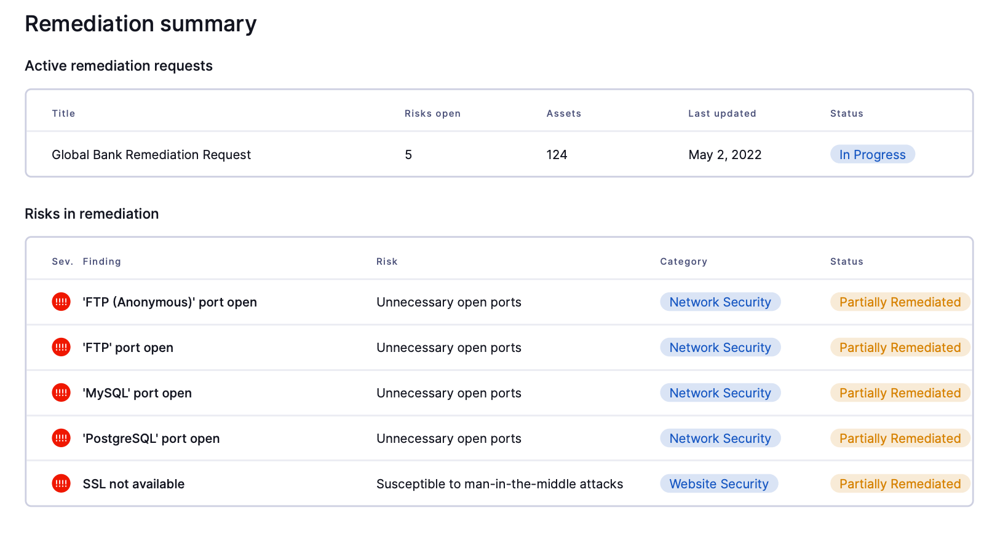
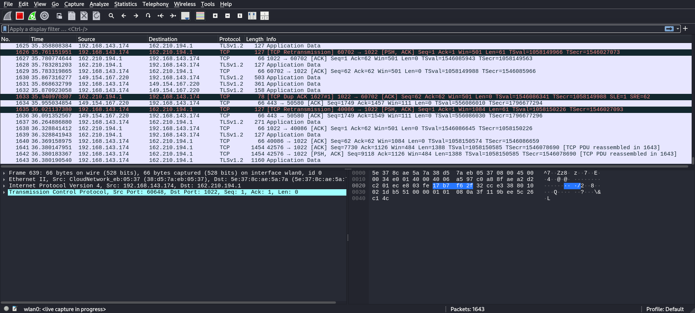

Overview
A penetration tester (pentester) is a cybersecurity expert who identifies and analyzes vulnerabilities in an organization’s systems, networks, and applications to prevent potential cyberattacks.
Job Responsibilities
A pentester assesses security across various levels of the information infrastructure, including web applications, networks, mobile apps, and cloud environments.
The role typically begins with analyzing the client’s requirements and defining test goals, such as verifying security compliance or identifying specific vulnerabilities.
Testing and Vulnerability Analysis
During the active testing phase, the pentester gathers information and identifies attack vectors using tools and techniques like port scanning, configuration checks, and vulnerability assessments.
Pentesters might simulate attacks (e.g., “Man-in-the-Middle”) and use social engineering to test security and expose weaknesses in employee awareness.
Reporting
After discovering vulnerabilities, the pentester compiles a report detailing the issues, business risks, evidence, and recommendations. This report helps clients make informed security decisions.
Key Skills and Tools
Proficiency in tools like Kali Linux, Metasploit, Burp Suite, Nmap, and Wireshark is essential. Knowledge of scripting in Python or Bash is also valuable for automation.
The pentester must adhere to strict ethical standards, as their work impacts data security and client confidentiality.